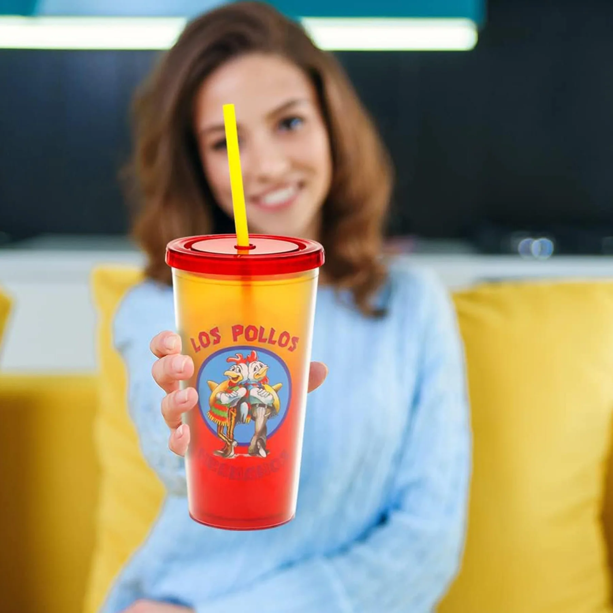
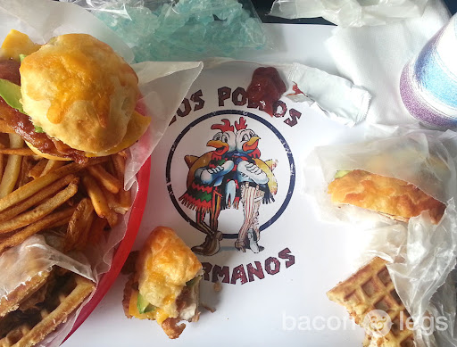

В Los Pollos Hermanos мы готовим не просто курицу — мы создаём семейную атмосферу! С первого дня работы мы стремимся радовать наших гостей самыми сочными и ароматными блюдами из курицы, приготовленными по уникальным рецептам. Наша золотистая, хрустящая курочка – это результат многолетних стараний и любви к своему делу.
Приходите к нам, чтобы насладиться не только вкусной едой, но и уютной атмосферой. В каждом блюде мы заботимся о качестве, свежести ингредиентов и гостеприимстве, которое вы почувствуете с первого визита. Los Pollos Hermanos — место, где вас всегда встретят с улыбкой и подадут лучшее, что можно найти в ресторанах быстрого питания.
Мы гордимся тем, что наши клиенты возвращаются за вкусом, который невозможно забыть. Откройте для себя вкус настоящей курицы — приходите в Los Pollos Hermanos!
Мы располагаемся в самом центре по адресу:
г.Альбукерке
Время работы:
ежедневно с 10:00 — 20:00.
+7 (000) 000-00-00